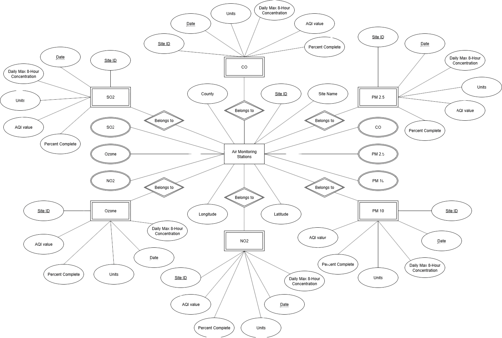
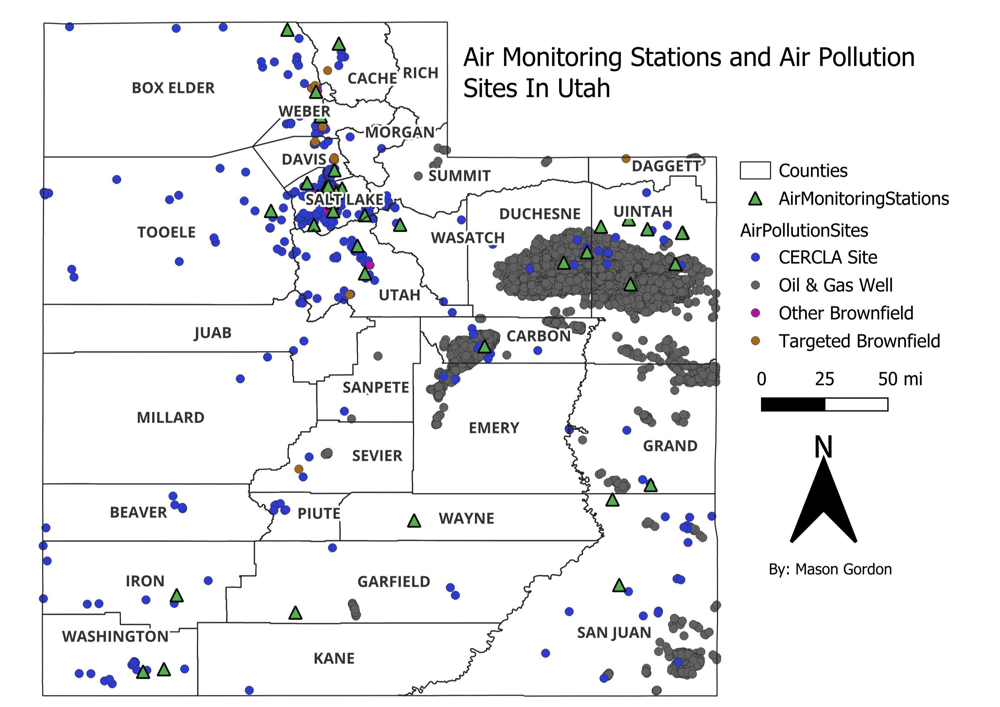
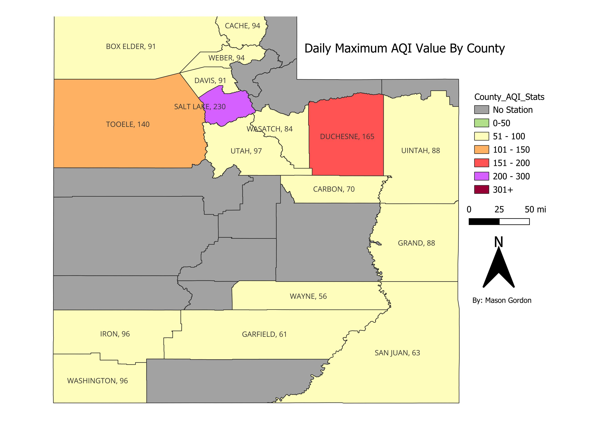
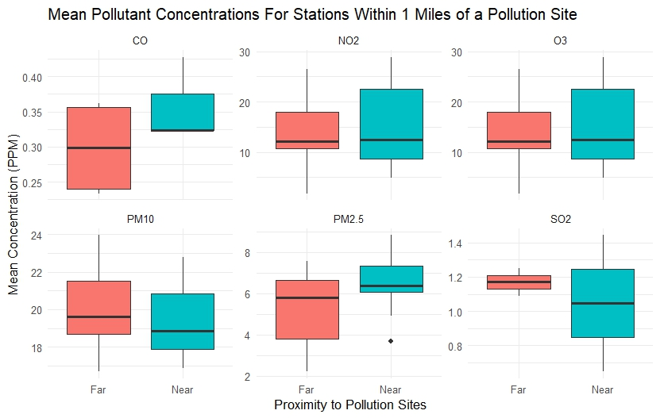

Using Open-Source EPA and UDEQ Data to Analyze Polluting Sites
Skills & Concepts Demonstrated
- Use appropriate database and similar technology for storing and querying spatial data: Built Entity-Relationship (ER) models and utilized PostgreSQL and PostGIS to organize and query complex spatial datasets.
- Identify and access suitable data sources for spatial projects: Sourced, cleaned, and managed disjointed CSV data from open-source EPA databases and the Utah Department of Environmental Quality (UDEQ).
- Understand how to manipulate and process spatial data: Conducted spatial joins and buffer analysis to evaluate contaminant concentrations in proximity to specific pollution sites.
- Database management (PGadmin, SQL) and spatial visualization (QGIS, R).
Project Summary
Utah has a long, storied battle with air quality. The natural shape of the Salt Lake Valley creates a bowl-like effect, making it difficult for air to circulate and resulting in the buildup of harmful pollutants. While recent milestones—such as Salt Lake City and Provo meeting the EPA's PM2.5 24-hour targets in 2025—show massive progress, understanding the spatial distribution of lingering pollution sources remains critical for public health.
This project leverages relational databases to manage massive amounts of air quality data. By downloading daily contaminant CSVs from the EPA and cross-referencing them with UDEQ pollution site data (including CERCLIS sites, brownfields, and active oil and gas wells), a comprehensive PostgreSQL/PostGIS database was established. This data structure allowed for in-depth spatial analysis to determine if proximity to varying pollution sites had a statistically observable effect on the Air Quality Index (AQI) recorded at nearby monitoring stations.
Key Figures & Analysis



